Лучшие утилиты для создания загрузочной флешки в Linux
В закладки
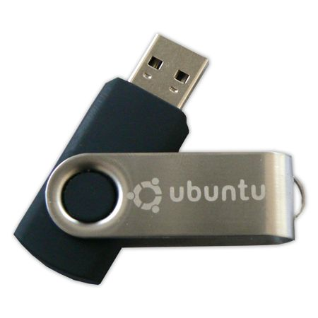
Меня очень часто спрашивают, какими программами/утилитами я пользуюсь для создания загрузочной флешки в Linux.
И сегодня, я хочу перечислить, те программы, которыми я пользуюсь каждый день, и которые мне больше всего нравятся. Это будет чисто мое субъективное мнение, и если вы хотите дополнить эту статью, то пожалуйста делитесь своими мыслями в комментариях.
Итак, создание загрузочной флешки это важный аспект, так как от этого будет зависеть, загрузится ваша система в Live-режиме, или нет, и если она не загрузится, то соответственно вы не сможете установить понравившуюся операционную систему себе на компьютер, поэтому если вы не можете установить ОС, с помощью одной утилиты, то пробуйте другую.
Программы для создания загрузочной флешки
1. Unetbootin
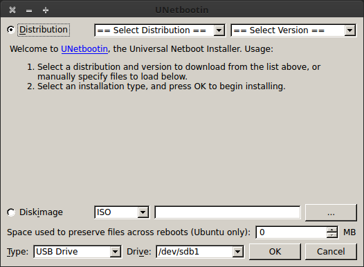
Я не мог, не включить эту утилиту в этот список, потому-что это одна из самых старых утилит, и которой я очень давно постоянно пользовался.
Сейчас она мне не очень нравится, так как бывают очень частые глюки, после которых операционная система не хочет грузится.
Установить эту утилиту очень легко, для этого, откройте терминал, и введите команды
sudo add-apt-repository ppa:gezakovacs/ppa
sudo apt update
sudo apt install unetbootin
После установки, находим unetbootin в меню приложений.
В использовании эта утилита очень проста, вы должны выбрать образ операционной системы и ваш флеш накопитель, нажать ОК, и через несколько минут у вас будет готова загрузочная флешка.
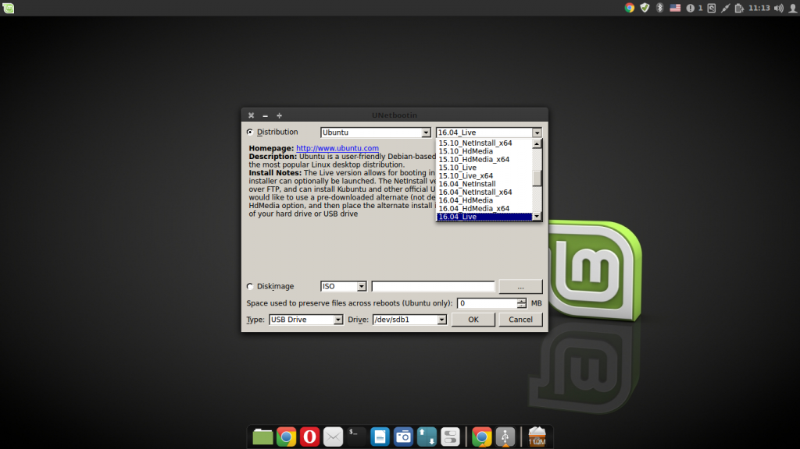
2. Rosa Image Writer
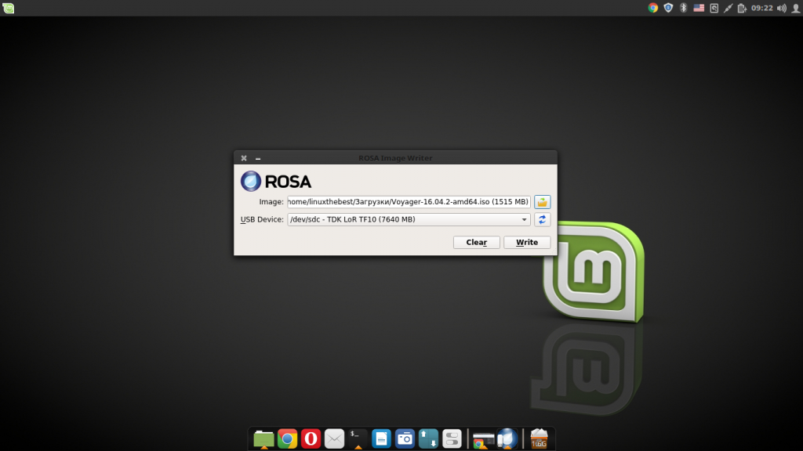
Еще одна отличная утилита, которой я всегда пользуюсь, это Rosa Image Writer, которая была создана создателями операционной системы Rosa OS.
Это очень простая программа, которая делает все тоже, что и команда “dd”, но в графическом варианте.
RosaImageWriter поставляется в виде скрипта, который вы можете скачать по ссылке ниже
После скачивания распакуйте архив
tar -xf RosaImageWriter-2.6.2-lin-x86_64.tar.xz
Перейдите в распакованную директорию
cd RosaImageWriter
Добавьте права на запуск
sudo chmod +x RosaImageWriter
И запустите с правами суперпользователя
После запуска, выберите образ и флеш накопитель, затем нажмите “Write” для создания загрузочной флешки.
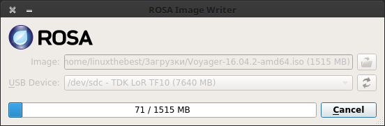
3. Стандартная утилита для записи образа на USB-накопитель
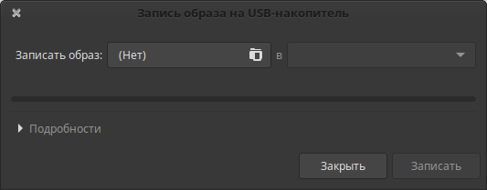
Раньше, с помощью стандартной утилиты, невозможно было записывать образы, но системы усовершенствуются, и эта утилита тоже.
И сейчас, эта утилита может записать почти любой образ, и доступна она почти во всех дистрибутивах основанных на Ubuntu.
Ее не нужно устанавливать, вам нужно только открыть меню приложений и ввести в поиске – Запись образа на USB-накопитель, далее выбрать образ, флешку, и нажать “Записать”.
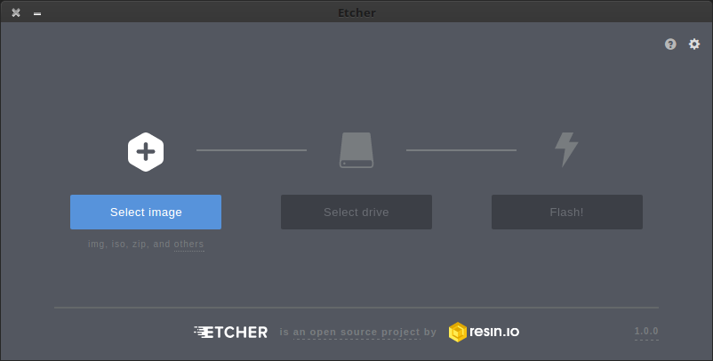
Эта утилита была создана совсем недавно, и уже получила кучу поклонников со всего мира. Она кроссплатформенная, и поставляется для Windows, MacOS и Linux.
Для операционных систем Linux, эта утилита доступна в Portable-виде – AppImage, и для ее запуска, вам нужно скачать утилиту по ссылке ниже
Распаковать zip-архив
sudo unzip Etcher-1.0.0-linux-x64.zip
Добавить права на запуск и исполнение
sudo chmod a+x Etcher-1.0.0-linux-x64.AppImage
И запустить
sudo ./Etcher-1.0.0-linux-x64.AppImage
После запуска, вы увидите вот такой красивый графический интерфейс, в котором все очень просто.
Нажимаем “Select image” для выбора образа операционной системы, после этого утилита сама попробует найти USB-накопитель, а вам останется всего-лишь нажать на кнопку “Flash”.
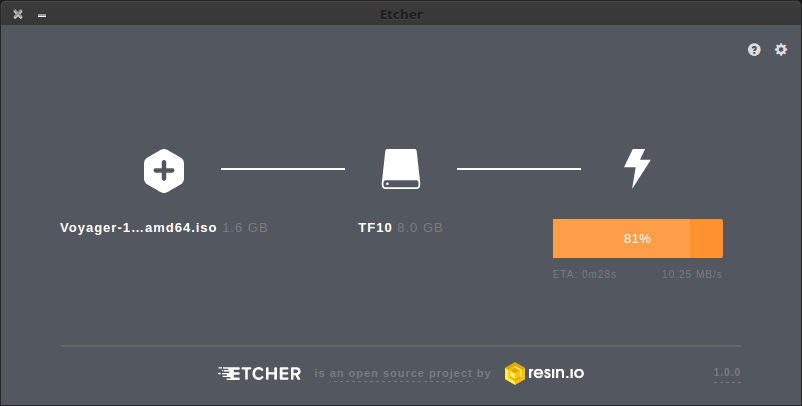
5. Multibootusb
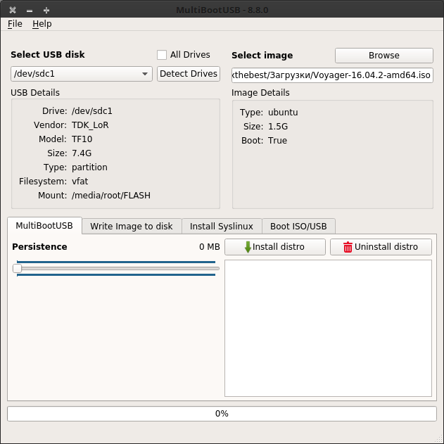
Это приложение для создания мультизагрузочной флешки, иными словами, с помощью этого приложения можно записать на ваш USB-накопитель, несколько операционных систем, и при запуске с флешки, вам будет предложен выбор, какую систему запустить.
Для начала, вам нужно загрузить эту утилиту, по ссылке ниже
После скачивания, просто установите с помощью Gdebi, магазина приложений, или терминала
sudo dpkg -i python3-multibootusb_8.8.0-1_all.deb
После установки, найдите его в меню приложений
Для создания мультизагрузочной флешки, вам понадобится флешка, и несколько образов различных операционных систем.
Хотя, разработчики пишут что флешка определяется автоматически, но мне пришлось выбирать ее самостоятельно нажав на выпадающий список “Select USB disk”
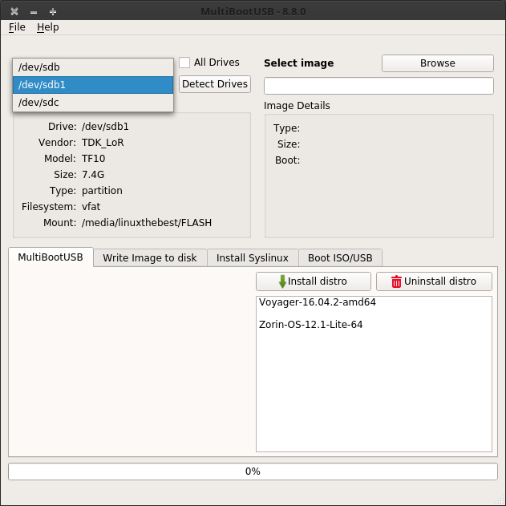
Далее выбираем образ немного правее, нажав на кнопку “Browse”, и нажимаем “Install distro”, у вас начнется процесс записи образа на диск.
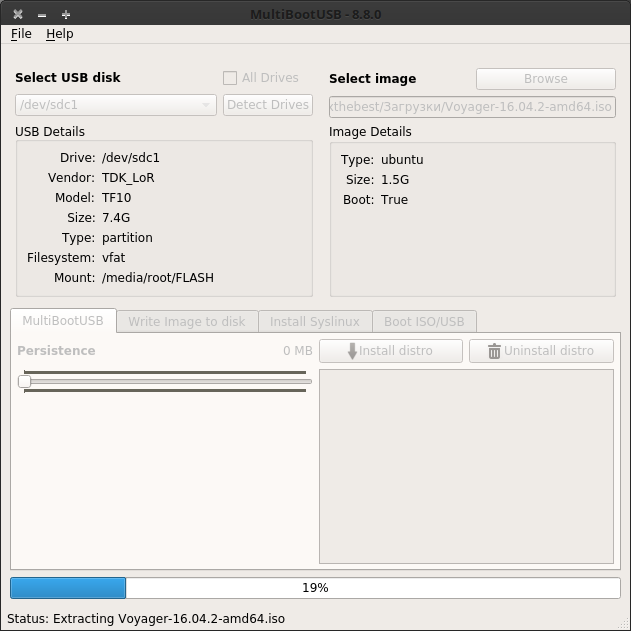
После завершения, вы можете выбрать еще один образ и опять нажать на кнопку “Install distro”, и так, пока у вас не закончится память на вашем накопителе.
Также, в этой утилите доступны еще несколько функций. На вкладке номер 2, вы сможете создать обычную загрузочную флешку, так если бы вы, использовали команду “dd” в терминале.
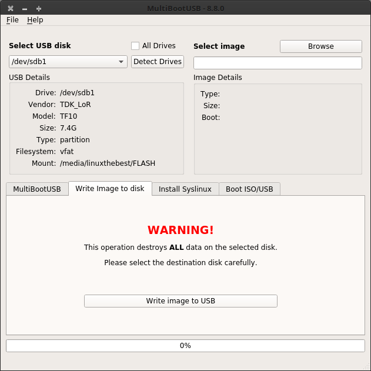
С помощью третьей вкладки, вы сможете заново установить загрузчик SysLinux, а также отредактировать некоторые параметры загрузки.
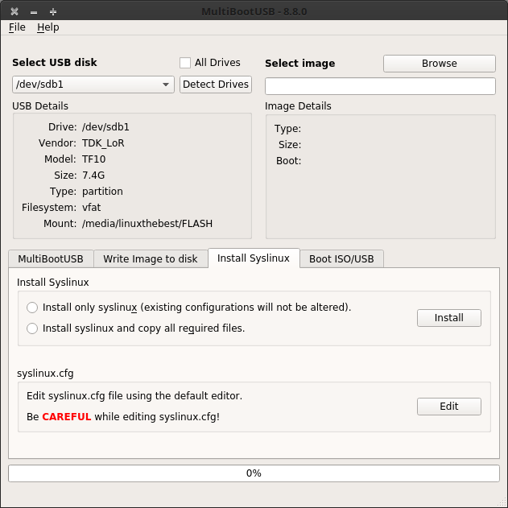
Вот и все, как видите существует очень много различных программ для операционных систем GNU/Linux, Хотя вы можете спокойно создать загрузочную флешку в терминале, но гораздо удобней использовать графический вариант, а еще лучше, для экономии места, создать мультизагрузочную флешку.
�